Introduction
This report investigate the evolution of fish unit price and implement algorithm to forecast this evolution.
Each chapter is dedicated to a specific fish trade analysis which involves a type of fish, a country and its type of trade (import or export).
Whithin these chapters, a first section is dedicated to the analysis of the trade history using classic methods and visualisations. A second section is dedicated to the implementation of forecast algorithms. Currently, 2 different forecast algorithm models are implemented: Glmnet and Prophet.
Glmnet is a generalized linear model via penalized maximum likelihood trained for forecast purpose. The regularization path is computed for the lasso or elasticnet penalty at a grid of values for the regularization parameter lambda. The algorithm is extremely fast, and can exploit sparsity in the input matrix \(x\).
Prophet is a procedure for forecasting time series data based on an additive model where non-linear trends are fit with yearly, weekly, and daily seasonality, plus holiday effects. It works best with time series that have strong seasonal effects and several seasons of historical data. Prophet is robust to missing data and shifts in the trend, and typically handles outliers well.
Finally additional analyses are presented in order to focus on specific points of the analysis such as factors influencing the Unit Price evolution, Seasonality and Trade evolution of specific partners.
1 Horse mackerel exports from Norway
1.1 Analysis
Between 2012 and 2020, Norway has exported horse mackerel to 32 countries worldwilde. However the data collected shows a important discrepency between these countries regarding the trade history, the level of the price applied and its volatility.
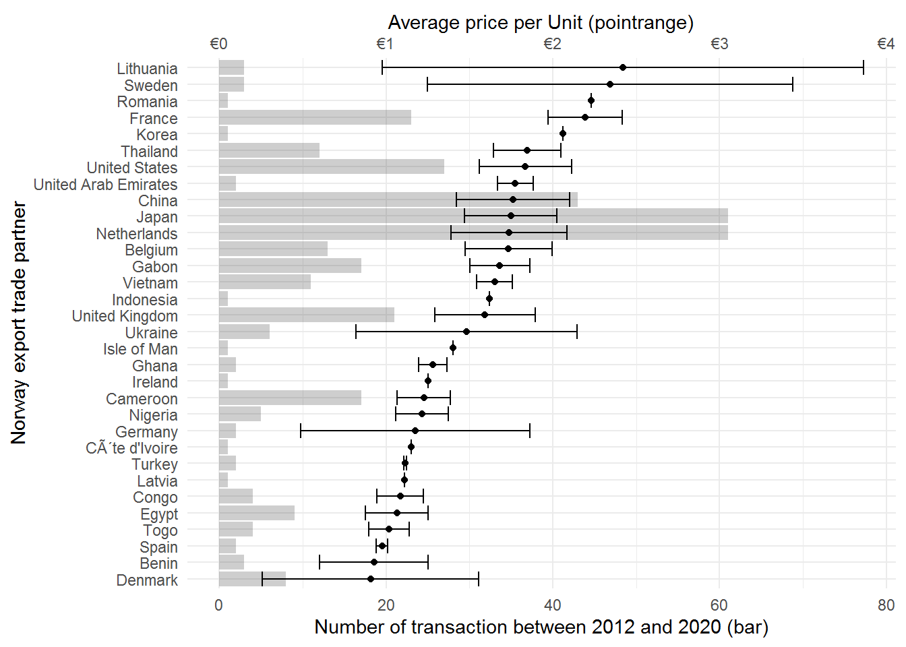
In the Figure here above, it is possible to distinguish countries with a high average price and high volatility such as Lithuania, high average price and low volatility such as France, low average price and high volatitilty such as Denmark and low average price with low volatility such as Egypt.
A second factor is particularly important to take into account, the level of trade can vary between the countries. Some countries have only one or two trade while others have more than 60 trades.
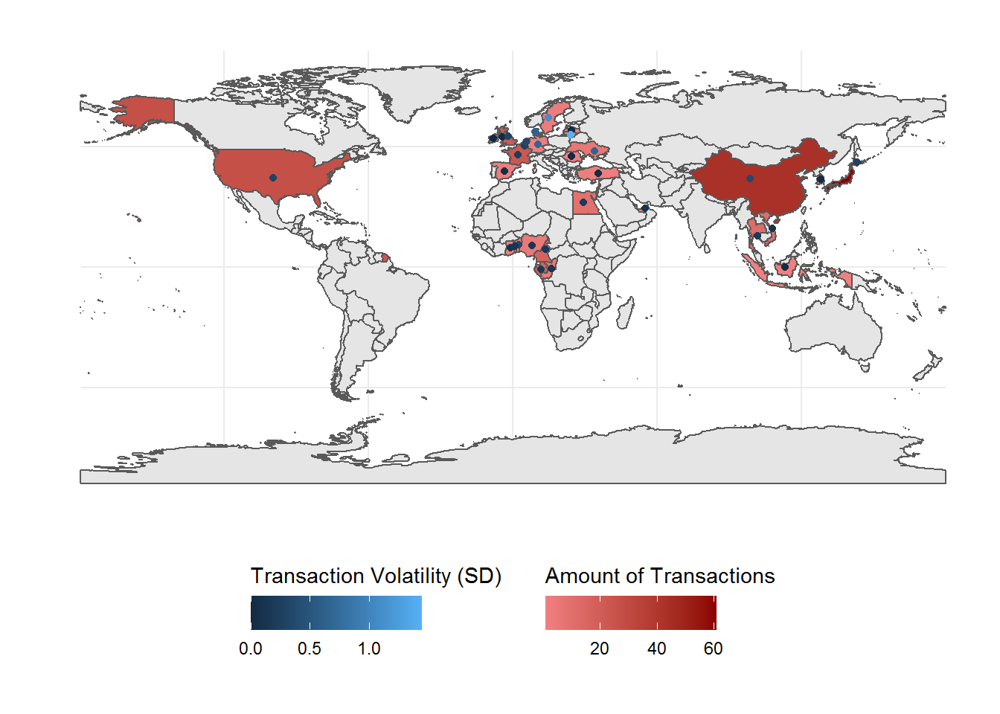
For the forcast models done in the next sections, this bias will not be removed as all the data will be taken into account. The available data are too low in term of sampling frequency (once a month maximun), on a too short period, with not enough data per country. Therefore an analysis country wise is impossible. All the data will be taken into account in the coming sections.
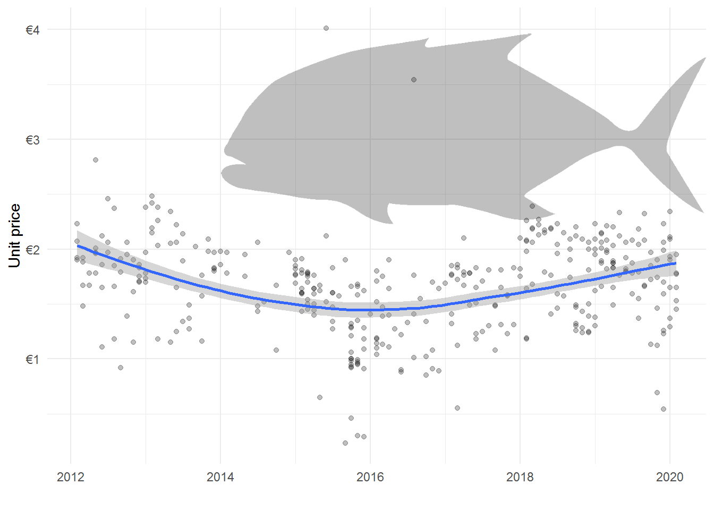
The trend of the evolution of fish price since 2012 indicates follows a slight parabolic inverse trend with a valley (negative peak) in 2016.
1.2 Glmnet Algorithm Forecast
In order to forcast the evolution of fish price according the time, the existing data are splitted in two sections: the train region which will be used to build the forecast model and the test region which will be used compare the data predicted with the actual data.
In order to process this forcasting model, 224 time features are extracted and used to predict the evolution of the unit price.
1.2.1 Forecast Validation
By selecting a train region from 2012 to 2018 and a test region from 2018 to 2020, it is possible to compare the forecast accuracy with the actual Average unit price values.
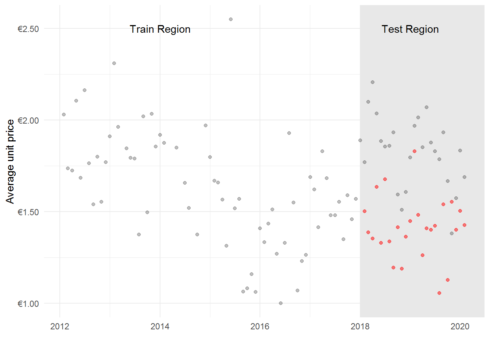
The most used indicators are RMSE and MAE. The closer to 0 is their value, the better. Here RMSE = 0.47 and MAE = 0.43. These results are encouraging but could be largely be improved. In paralel, the \(R^2\) indicator also ranges from 0 to 1 but the closer to 1 is the value, the better. Here, the model explains 3% of the variance of the unit price variation.
1.2.2 Forecast Prediction
Based on the model previously test, a forecast of the 24 next months is performed.
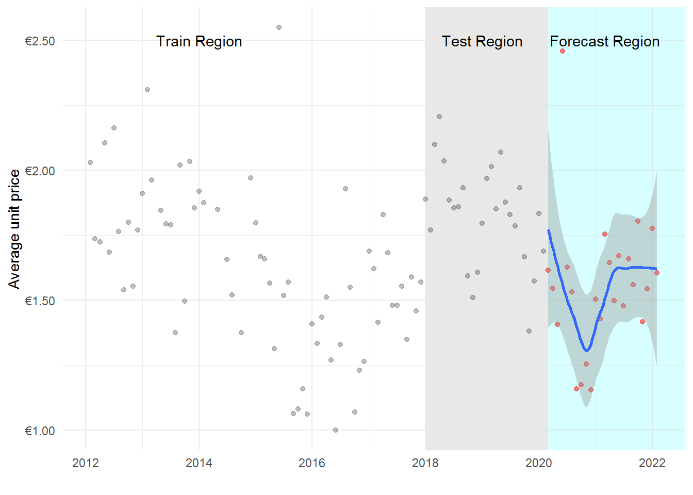
Even if the accuracy of the forecast model on the test table is low, it is still possible to use it to forcast the price whithin 2 years. The model reveals a sharp decrease in 2020 and a rebound from 2021.
1.3 Prophet Algorithm Forecast
As the glmnet algorythm, the prophet decomposition extract the temporal trends, seasonality, multiplicative factor and their prediction residuals.
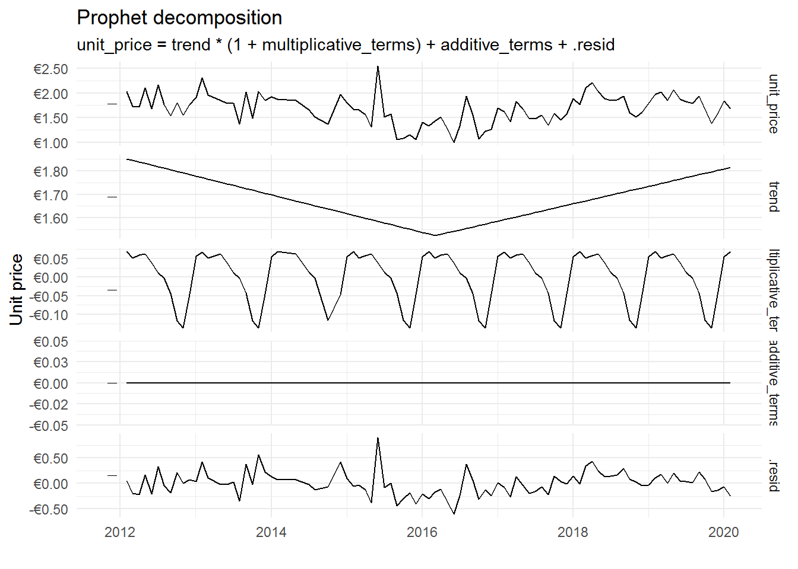
1.3.1 Forecast Validation
Here RMSE = 0.57 and MAE = 0.54, which is better than the glmnet algorithm but this value is only the train region.
1.3.2 Forecast Prediction
The result of the forecast by Prophet uses the seasonlity of the price evolution (see Additional Analyses section) as well as the overall trend.
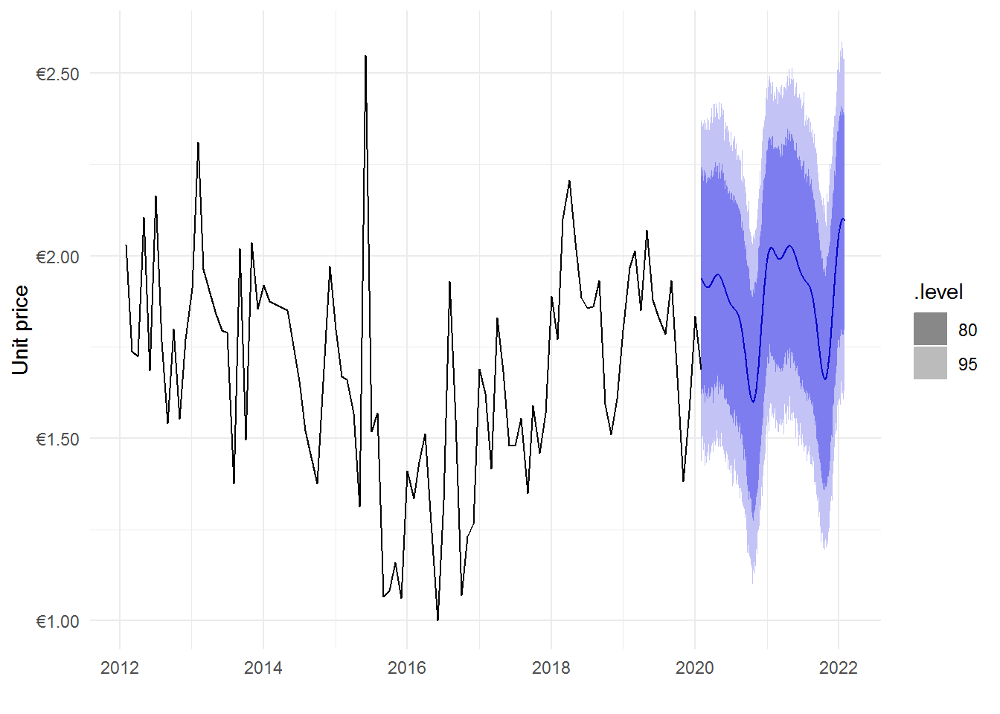
The prediction reveals a decrease of the fish price from Febuary to November with a price in 2022 slightly higher than 2021.
1.4 Additional Analyses
1.4.1 Factors influencing Unit price
The difference between countries that are historic and recurent trade partner with countries who have only several past trade is highly relevant. Indeed we can imagine that price establisment is build on a commercial relationship between the countries, if a country has no history, the average price paid is likely to be higher than historical trade partners which will bisais the forcast of the evolution.
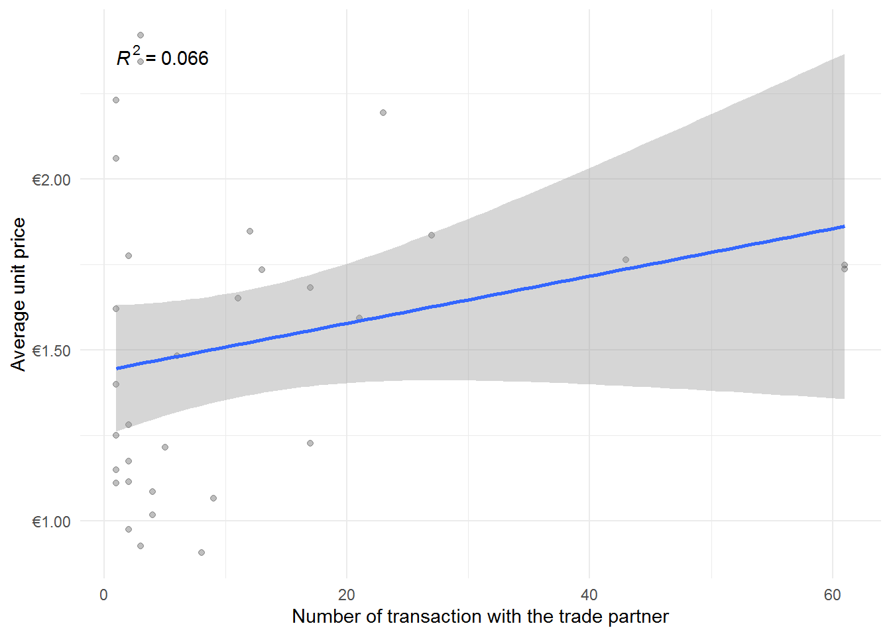
However the results show that the number of trade has no significant relationship with the average unit price (\(R^2 = .07\), \(F(1, 30) = 2.12\), \(p = .156\)).
Another possible bais involved in trade relationship is the possible relationship between quantity and unit price.
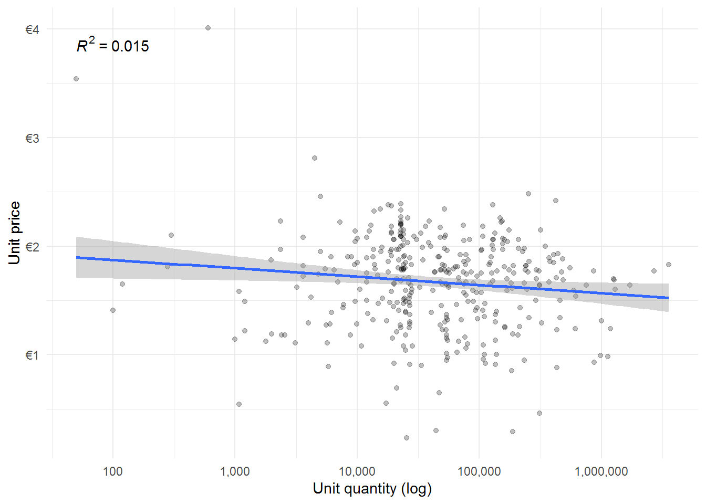
It seems logical to believe that countries buying more will have more leverage to negociate their unit price. The results reveals a weak but significant relationship between the unit quantity ordered on a log scale and unit price (\(R^2 = .02\), \(F(1, 366) = 5.68\), \(p = .018\)).
A future investigation would be to try to understand the factors explaining why certain countries have a high average price and others a low average price (beside the the number of trade).
1.4.2 Trend in long lasting trade partners
Countries with a short trade history can be perceived as being outliers, so just to check, countries with less than 10 trades have been removed from the following analysis.
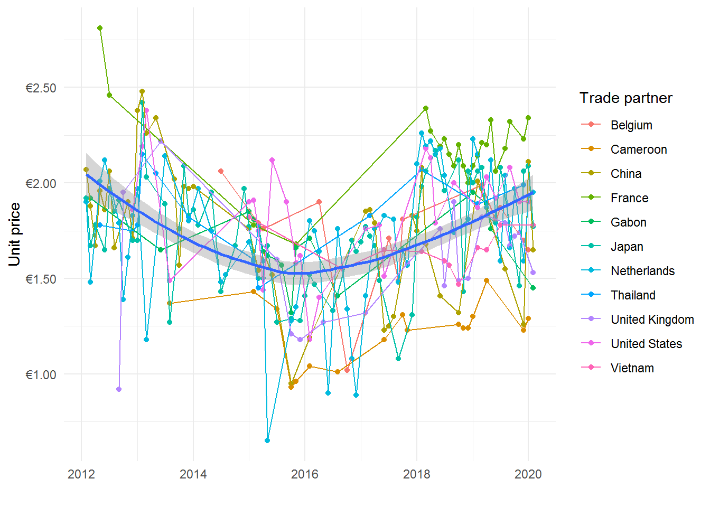
Result without countries with less than 10 trade data point reveal the exact same pattern as previsouly identified. Because analysing all the countries together is essential given the low amount of data to forecast and the trend appears to be similar for these countries, all the data will be kept for the remaining analyses.
1.4.3 Unit price seasonality changes
The analysis of the seasonal change within a year indicates a specific recuring pattern with a peack in April and a decease until December.
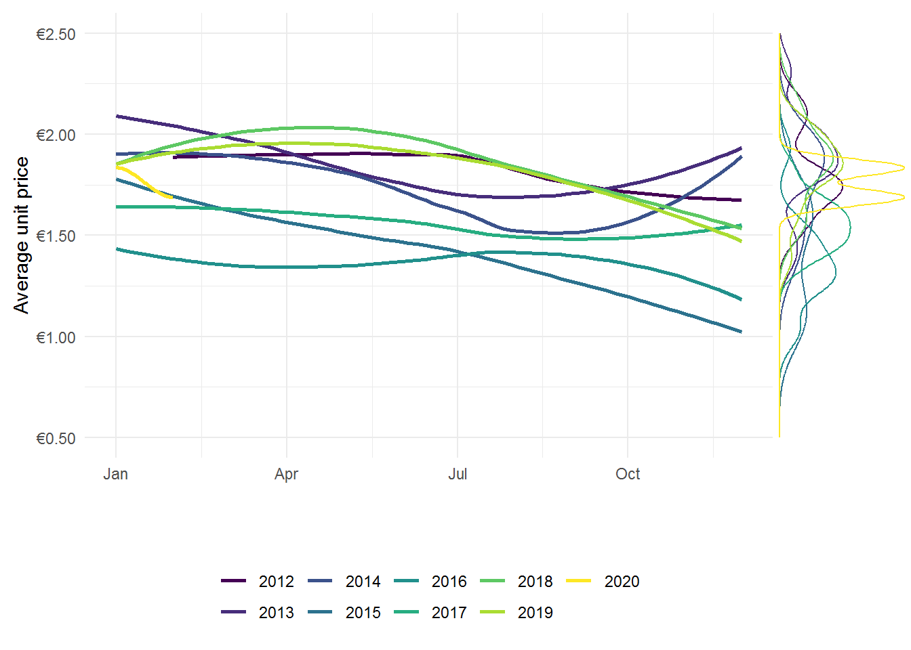
It is also interesting to observe that prices increase with the years.